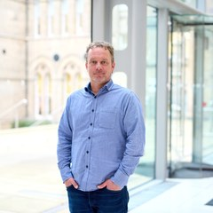
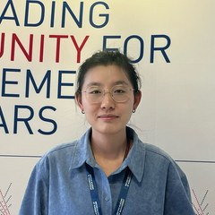
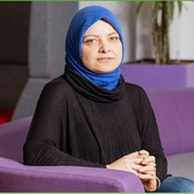
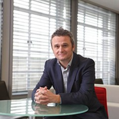
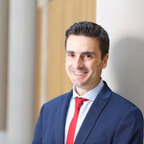

About
Team and partners
The people and organisations behind CBIT: our advisory board and start-up advisors, core team, associate members and key stakeholders, and partners and funders.
Advisory board and start-up advisors
Academic advisers on the CBIT Academic Advisory Board, and independent advisers to founders in the CBIT Venture Builder.
Advisory board
Professor Roger Maull
Member, CBIT Academic Advisory Board
Professor of Management Systems; Academic Director, Exeter INDEX, University of Exeter Business School
Professor of Management Systems at the University of Exeter Business School and Academic Director of Exeter INDEX. Maull researches what the digital revolution means for business and society, and helped set up Surrey’s Centre for the Digital Economy.
Professor Julie Davies
Member, CBIT Academic Advisory Board
Professor of Healthcare Management and Leadership Development, Brunel Business School, Brunel University of London
Professor of Healthcare Management and Leadership Development at Brunel Business School, Brunel University of London, after many years at UCL. Davies researches hybrid management and leadership development in healthcare and business education, and workplace well-being.
Professor Shujun Li
Member, CBIT Academic Advisory Board
Professor of Cyber Security; Director, Institute of Cyber Security for Society (iCSS), School of Computing, University of Kent
Professor of Cyber Security in the School of Computing at the University of Kent and Director of its Institute of Cyber Security for Society (iCSS), leading cyber security research and education across the university.
Professor Iis Tussyadiah
Member, CBIT Academic Advisory Board
Dean of Surrey Business School; Professor of Intelligent Systems in Service, University of Surrey
Dean of Surrey Business School (since August 2024) and Professor of Intelligent Systems in Service at the University of Surrey. Tussyadiah’s research on digital transformation in services, especially travel and tourism, is internationally recognised.
Professor Karena Yan
Member, CBIT Academic Advisory Board
Dean, J.E. Cairnes School of Business and Economics; Established Professor of Innovation and Strategic Management, University of Galway
Dean of the J.E. Cairnes School of Business and Economics at the University of Galway and Established Professor of Innovation and Strategic Management; formerly Professor and Associate Dean at Durham University Business School. Yan researches cross-border innovation management and R&D strategy.
Start-up advisors
Phil Webster
Independent start-up advisor to the CBIT Venture Builder
Fractional COO and strategic adviser
An experienced fractional COO and strategic adviser who helps founders and CEOs align operations with strategy, with experience in fintech, defence AI development, personal genomics and several start-ups.
Dr Chunli Cao
Independent start-up advisor to the CBIT Venture Builder
Expert in air quality, CFD and energy-efficient buildings
An expert in air quality, computational fluid dynamics and energy-efficient buildings, specialising in BIM and life-cycle assessment, and developer of the international energy calculator for BREEAM In-Use. A Fellow of CIBSE, a Chartered Engineer and FIMechE.
Dr Mahdi Bodaghi
Independent start-up advisor to the CBIT Venture Builder
Senior Lecturer in Mechanical Engineering; founder and director, 4D Materials & Printing Lab, Nottingham Trent University
Senior Lecturer in Mechanical Engineering at Nottingham Trent University and founder and director of its 4D Materials & Printing Lab, working on smart materials, metamaterials, sustainable bio-composites and 3D/4D printing. Co-founder of the 4D Printing Society.
Professor Rong Qu
Independent start-up advisor to the CBIT Venture Builder
Professor, School of Computer Science, University of Nottingham
Researches machine-learning-supported optimisation for logistics, transport, healthcare and energy-efficient buildings, with decision-support systems for SME fleet operations, hospital workforce scheduling and cyber security for connected vehicles.
Jon Boothe
Independent start-up advisor to the CBIT Venture Builder
Business strategist and sales executive (B2B tech sales)
A business strategist and sales executive who has driven growth for start-ups and Fortune 500 companies across CRM, cloud, AI and business development, including at a leading cloud solutions company. BSc Economics and Sociology, Florida State University.
Harry Nijjar
Independent start-up advisor to the CBIT Venture Builder
Founder, Woodstock Haus (digital marketing)
Founded Woodstock Haus, a marketing and technology consultancy, in April 2019 after more than 12 years in marketing, including as Head of Services Marketing at SCC. Previously a University of Warwick staff member and graduate.
Martin Sandhu
Independent start-up advisor to the CBIT Venture Builder
Digital healthcare product and technology leader
Has 20 years in product development and technology delivery, taking companies from concept to market in the UK, US and Gulf states, with a focus on health, wellbeing, digital health and MedTech.
Nishant Raj
Independent start-up advisor to the CBIT Venture Builder
CEO, Valuechain Technology Ltd
CEO of Valuechain Technology Ltd, which provides data-driven solutions for smart manufacturing and supply-chain optimisation, with over ten years in the manufacturing industry. A certified ScrumMaster and host of the podcast 'How Did They Get There?'.
Core team
CBIT's staff, led by its Director, Professor Xiao Ma, in Nottingham Business School at Nottingham Trent University.

Professor Xiao Ma
Director of CBIT
Professor of Entrepreneurship and Management, Nottingham Business School, Nottingham Trent University
Founding Director of CBIT; Professor of Entrepreneurship and Management at Nottingham Business School. A practitioner turned academic: management consultant (DecTech; BCG), founder of Hub of All Things (HAT), and Entrepreneurship Expert at Saïd Business School, University of Oxford.
Georgi Iliev
Head of Venture Builder
Nottingham Business School, Nottingham Trent University
A co-founder of CBIT, Georgi advises start-ups and SMEs on AI transformation and builds CBIT's AI agent networks. Previously Tech Lead at the WMG Accelerator; Google AI Fellow and Perplexity Business Fellow.
Takunda Chingonzo
Lecturer in AI
Nottingham Business School, Nottingham Trent University
Lecturer in AI at Nottingham Business School, researching how personal data can drive business transformation while protecting privacy. Founder of TechVillage Innovation Centre, former Microsoft skilling programme manager in Africa, Chevening alumnus and UK Young Academy member (2026).
Evelyn Xie
Business Engagement Manager
Nottingham Business School, Nottingham Trent University
Connects CBIT’s executive education, AI platforms and international innovation networks, and is a Master Trainer on a British Council programme. Before CBIT, Evelyn led multi-site retail teams across the UK.
Dr Zeng Fan
AI Lead and Researcher
Research Fellow in AI, machine learning and data science, Nottingham Business School, Nottingham Trent University
CBIT’s specialist in AI, machine learning, signal processing and data optimisation, working across software and hardware builds, and co-module leader for Global Consultancy at Nottingham Business School. Previously a Research Fellow at Brunel University London, with a PhD in Electrical Engineering.

Dr Sönnich Dahl Sönnichsen
Education Lead and Associate Professor
Associate Professor; Course Leader, MSc Strategic Entrepreneurship and Innovation Management, Nottingham Business School, Nottingham Trent University
Associate Professor specialising in innovation, business transformation and the circular economy, and Course Leader for the MSc Strategic Entrepreneurship and Innovation Management. Previously a postdoctoral researcher at Lund University; PhD from Copenhagen Business School.
Dr Mahdi Rashvand
Research Fellow
Nottingham Business School, Nottingham Trent University
Research Fellow at CBIT, working on digital twins and AI-driven solutions in food engineering, artificial intelligence and sustainability, to optimise food processing and reduce environmental impact. PhD in Food Science and Technology, with research experience in the UK, Italy and Denmark.
Eleftherios Myteletsis
Frontend Developer
CBIT, Nottingham Business School
Professor Jay Bal
Visiting Professor
Nottingham Business School, Nottingham Trent University (visiting)
Visiting Professor at Nottingham Business School and CBIT's senior business adviser, specialising in business modelling. Part of the original WMG Accelerator team; co-author of 'Every staff is a superstar and everyone is an entrepreneur' (Human Resource Development International, 2025).

Associate members and key stakeholders
Associated members and key partners who work with CBIT across Nottingham Trent University and beyond.

Professor Eiman Kanjo
Associated member
Professor of Pervasive Sensing; head of the Smart Sensing Lab, Nottingham Trent University (School of Science and Technology)
Professor of Pervasive Sensing at Nottingham Trent University and head of the Smart Sensing Lab; Honorary Visiting Professor in the Department of Computing at Imperial College London, and Turing University Network Academic Lead at the Alan Turing Institute.

Paul Wreaves
Associated member
Senior Lecturer, Nottingham Business School; Director, Hive Thinking, Nottingham Trent University
Senior Lecturer at Nottingham Business School and Director of Hive Thinking. An experienced business coach with director-level supply-chain experience, and Nottinghamshire Chair of the Chartered Institute of Logistics and Transport.
Richard Lu
Associated member
Richard has worked in finance, investment and business management across China and Europe: first at Chinese state-owned financial institutions, including a state-owned commercial bank and a trust company, then as a partner at a private equity fund. Richard’s cross-border work includes leading and taking part in overseas investment and M&A for major Chinese manufacturers ranked among the China 500, at the meeting point of finance, industry and international business between China, Europe and emerging markets.
Professor Amin Al-Habaibeh
Associated member
Professor of Intelligent Engineering Systems; Director, Product Innovation Centre, Nottingham Trent University (School of Architecture, Design and the Built Environment)
Professor of Intelligent Engineering Systems at Nottingham Trent University (since 2014) and Director of its Product Innovation Centre; national Director of the Doctoral Training Alliance (Energy). Al-Habaibeh’s work spans product design, automation, energy and artificial intelligence.
Dr Iryna Kuksa
Associated member
Senior Research Fellow; Director, Design Research Centre, Nottingham School of Art & Design, Nottingham Trent University
Senior Research Fellow in Nottingham School of Art & Design and Director of its Design Research Centre, whose work launched the research field of design for personalisation. Kuksa co-leads EASE with Professor Xiao Ma.
Dr Muhammad Usman Mazhar
Associated member
Senior Lecturer in Sustainability; NBS Sustainability Coordinator, Nottingham Business School, Nottingham Trent University
Dr Fatima Gillani
Key partner
Lecturer in Digital Transformation, Aston Business School, Aston University
Digital transformation researcher at Aston Business School, working on digital twins, digital supply chains, business models and sustainability; published in Technological Forecasting and Social Change and the International Journal of Production Economics.
Dr Jonathan Sims
Key partner
Business Performance Director (board member), SES Engineering Services
Business Performance Director on the board of SES Engineering Services, with more than 25 years in engineering, energy and construction. A Visiting Professor at Durham University Business School and Affiliate Professor at emlyon business school.
Ahmed Saad
Key partner
Programme Manager, Oxford Saïd Entrepreneurship Centre, Saïd Business School, University of Oxford
Programme Manager at the Oxford Saïd Entrepreneurship Centre, Saïd Business School, University of Oxford.
Alexander McLeod
Key partner
Start-up Coach, Warwick Enterprise, University of Warwick
Start-up Coach at Warwick Enterprise, University of Warwick, supporting student and graduate founders, and co-leading the WBS Founders Hub. More than 20 years at the intersection of start-ups, investment and higher education.
Mohamed Abbas
Key partner
Venture Builder Manager, Masood Entrepreneurship Centre, University of Manchester
Launched and leads the Manchester Venture Builder at the University of Manchester's Masood Entrepreneurship Centre: a 12-week programme helping entrepreneurs validate ideas, build a minimum viable product and gain traction.
Professor Sergey Saveliev
Key partner
Professor of Theoretical Physics; Associate Dean for Research and Innovation, School of Science, Loughborough University
Professor of Theoretical Physics and Associate Dean for Research and Innovation in the School of Science at Loughborough University, and academic lead of a cross-school initiative in AI and cognitive technologies.
Professor Haixia (Alice) Zhang
Key partner
Professor, School of Integrated Circuits; founder of iCAN and iCANX, Peking University
Professor in the School of Integrated Circuits at Peking University, researching micro-nano devices, energy harvesting and self-powered smart systems. Zhang started iCAN in 2007 and founded iCANX in 2020.

Professor Vangelis Tsiligkiris
Key partner
Professor of International Education; Head of the Department of Accounting and Finance, Nottingham Business School, Nottingham Trent University
Professor of International Education and Head of the Department of Accounting and Finance at Nottingham Business School; an expert in transnational education and internationalisation in higher education.
John Hunt
Key partner
Medical Technologies Innovation Facility (MTIF), Nottingham Trent University
Philip Quinlan
Key partner
University of Nottingham (Nottingham Medical School)
Partners and funders
CBIT's sister centres, and the organisations that fund and work with us.
Sister centres
Fudan University School of Management
China
CBIT’s sister centre in China, for leadership and venture building.
Chiang Mai University Science and Technology Park (CMU STeP)
Thailand
Delivered the MHESI-funded national AI and entrepreneurship programme with CBIT, and forms a founding sister centre with CBIT under a five-year memorandum of understanding, signed April 2026.
Who funds our work
Who we work with
- Mae Fah Luang University (MFii)
- University of Nottingham
- University of Lincoln
- Microsoft Research (Cambridge)
- Healthy Air Technology Ltd
- Innovate UK Business Connect
- The University of Manchester
- Medical Technologies Innovation Facility (MTIF), Nottingham Trent University
- Barclays Eagle Labs